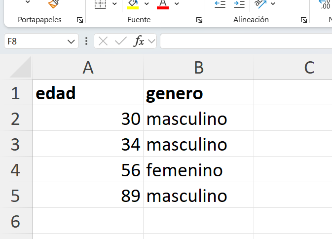
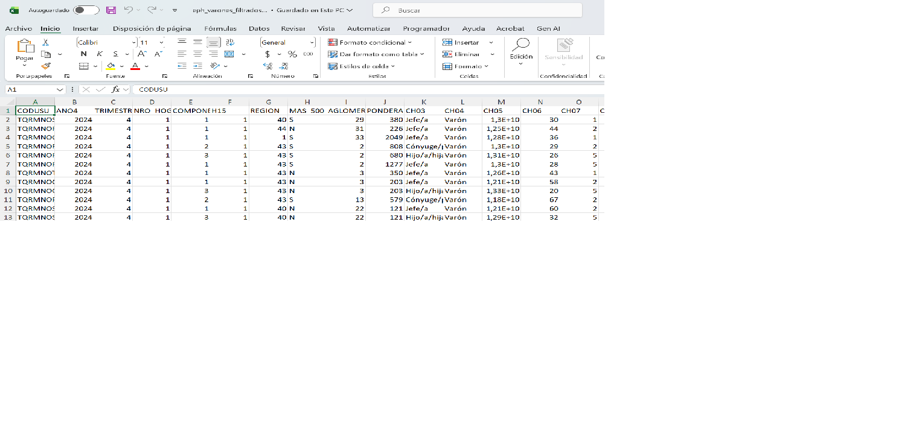
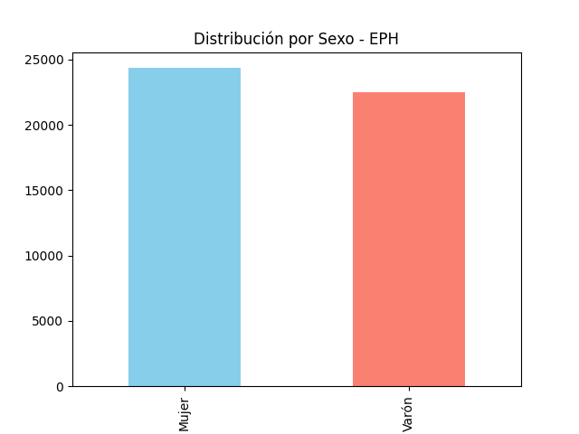

Clase 02: Primeros comandos con Python + Pandas
Experimentamos con nuestro ecosistema de trabajo
1. Manos a la obra
El enfoque de este capítulo es familiarizarse con algunos comandos y acciones comunes al procesamiento y analisis de datos, ganar confianze e introducirse en los temas.
1.1 Cargamos la base SAV
Iniciamos nuestro script asegurando la carga de la librería y el acceso a los datos de la EPH.
# --- CARGA DE BASE EPH ---
import pandas as pd
# Definición de ruta con Raw String (r)
ruta = r'c:\CursoPandas\data\input\24Q4_INDIVIDUOS.sav'
# Carga de datos utilizando el motor instalado
df = pd.read_spss(ruta)
# Inspección inicial
print(df.head())- Importamos la herramienta: Traemos ‘pandas’ con el alias ‘pd’.
- Especificamos el camino: Usamos una variable ‘ruta’ con el prefijo ‘r’ (raw string) para que Windows no confunda las barras invertidas de la dirección del archivo.
- Leemos el archivo: El comando
read_spsstraduce el formato de SPSS a una tabla de Python (DataFrame). - Primer vistazo:
print(df.head())nos muestra las primeras 5 filas para verificar que la carga fue exitosa.
Si al ejecutar el código la terminal se queda en blanco o te da un error, revisa estos tres puntos clave:
- El nombre de la base: Asegúrate de que el archivo
.savo.xlsxesté realmente en la carpetadata/input/. Si el nombre tiene un error de ortografía, Python no lo encontrará. - El entorno activo: Verifica que en la terminal de VS Code veas el prefijo (venv). Si no está, las librerías como Pandas no funcionarán.
- Las comillas y paréntesis: Recuerda que los textos siempre van entre comillas
' 'y las acciones (métodos) siempre terminan en().
1.1 Cargamos una base de ejemplo Excel
Es una digresión, solo para ver las similitudes:

# --- INSTALACIÓN DEL MOTOR PARA EXCEL ---
# Desde la terminal (con el venv activo):
# pip install openpyxl
# --- CARGA DE BASE DESDE EXCEL ---
import pandas as pd
# Definición de ruta
ruta_excel = r'c:\CursoPandas\data\input\base_excel_ejemplo1.xlsx'
# Carga de datos especificando el motor (engine)
df_excel = pd.read_excel(ruta_excel, engine='openpyxl')
# Inspección inicial
print("Comando: df_excel.head()")
print(df_excel.head())Es fundamental entender que import pandas nos da las funciones de análisis, pero Pandas delega la lectura de archivos específicos a otros “especialistas” o motores que debemos instalar en nuestro venv:
- Para archivos .sav (SPSS): El especialista es pyreadstat.
- Para archivos .xlsx (Excel): El especialista es openpyxl.
- Para archivos .csv: No requiere motor externo, Pandas lo lee de forma nativa.
Sin estos motores instalados, los comandos read_spss o read_excel devolverán un error de sistema.
2. Comandos de Inspección: ¿Qué tenemos en la base?
Antes de operar, debemos “mirar” la base para conocer la naturaleza de nuestras columnas y el tipo de dato que almacenan.
import pandas as pd
# Definición de ruta con Raw String (r)
ruta = r'c:\CursoPandas\data\input\24Q4_INDIVIDUOS.sav'
# Carga de datos utilizando el motor instalado
df = pd.read_spss(ruta)
# --- INSPECCIÓN INICIAL ---
# 1. Diagnóstico de columnas y tipos de datos
print("Comando: df.info()")
print(df.info())
# 2. Dimensiones de la tabla (Filas, Columnas)
print("Comando: df.shape")
print(df.shape)- Diagnóstico Estructural:
df.info()nos dice cuántos datos no nulos tenemos y el tipo técnico (Dtype). Es vital para saber si la “Edad” es un número o un texto. - Tamaño del objeto:
df.shapenos devuelve dos números. El primero es la cantidad de registros y el segundo la cantidad de variables.
3. Análisis de Variables Específicas
Nos enfocaremos en dos variables clave de la EPH: ‘CH06’ (Edad) y ‘CH04’ (Sexo).
# --- EXPLORANDO VARIABLES ---
import pandas as pd
# Definición de ruta con Raw String (r)
ruta = r'c:\CursoPandas\data\input\24Q4_INDIVIDUOS.sav'
# Carga de datos utilizando el motor instalado
df = pd.read_spss(ruta)
# 1. Valores únicos en edad
print("Comando: df['CH06'].unique()")
print(df['CH06'].unique())
# 2. Conteo de frecuencias en sexo
print("\nComando: df['CH04'].value_counts()")
print(df['CH04'].value_counts())4. Ejemplo de selección y filtrado
En muchos sentidos procesar y analizar datos consiste en obtner métricas de un subconjunto de datos. Aqui nuestro ‘query’ de ejemplo.
4.1 Filtrar por Varones
Queremos ver la edad solo de los varones (‘CH04 == “Varón”’).
# --- FILTRO SIMPLE ---
import pandas as pd
# Definición de ruta con Raw String (r)
ruta = r'c:\CursoPandas\data\input\24Q4_INDIVIDUOS.sav'
# Carga de datos utilizando el motor instalado
df = pd.read_spss(ruta)
# Seleccionamos filas donde sexo es varón
varones = df.query('CH04 == "Varón"')
# ¿Cuántos varones hay y cuál es su edad promedio?
print(f'Total varones: {len(varones)}')
print(f'Edad promedio varones: {varones["CH06"].mean():.2f}')
# Metodo .mean()
#La estructura es: {valor : formato} ver el rol de los ":"
#Desglose de la instrucción
# [varones["CH06"].mean()] : Es la parte del "valor".
# [.2f] : Es la instrucción de formato:
# .2: Indica que quieres 2 decimales.
4.2 Anatomía de una f-string: {len(varones)}
Esta línea de código es un ejemplo fundamental de cómo Python comunica resultados numéricos mediante texto legible. En programación, esto se denomina f-string (Formatted String Literal).
# La 'f' antes de las comillas activa el modo interactivo
print(f'Total varones: {len(varones)}')Desglose del comando:
- La letra
f: Al anteponer unafa las comillas, le indicamos a Python que el texto contendrá “agujeros” (llaves{}) que deben ser rellenados con valores calculados en tiempo real. - Las llaves
{ }: Todo lo que escribamos dentro de las llaves será ejecutado como código vivo antes de mostrarse en pantalla. - La función
len(): Es la abreviatura de length (longitud). Cuando se aplica a un DataFrame de Pandas (como nuestro objetovarones), su función es contar la cantidad total de filas que sobrevivieron al filtro.
Si ejecutáramos simplemente print(len(varones)), la terminal nos devolvería un número suelto (ej: 8420). Para un analista, ese dato carece de contexto. Al usar la f-string, transformamos un valor crudo en información interpretable: “Total varones: 8420”.
Zona de Prompting: “Actúa como experto en Python. Explícame la diferencia técnica entre usar len(df) y df.shape[0] para contar registros en un DataFrame de Pandas. ¿Cuál es más eficiente cuando trabajamos con bases de datos de gran volumen como la EPH?”
5. Estructura de Datos: dtypes y Niveles de Medición
En el análisis con Pandas, la naturaleza técnica del dato determina las operaciones permitidas. No basta con “ver” un número; es necesario que el intérprete lo reconozca bajo un tipo de dato (Dtype) específico para evitar errores de tipo (TypeError).
| Concepto Estadístico | Tipo en Pandas (Dtype) | Descripción |
|---|---|---|
| Numérica | int64 o float64 |
Variables para cálculo matemático (Edad, Ingresos). |
| Nominal (Texto) | object o string |
Etiquetas alfanuméricas sin orden intrínseco. |
| Categorizada | category |
Variables con valores fijos (Nivel Educativo, Sexo). |
El tipo de dato category es una de las funciones potentes de Pandas. A diferencia del tipo object, permite definir un orden lógico (por ejemplo: Primario < Secundario < Universitario), vital para el análisis de variables ordinales.
# --- DIAGNÓSTICO DE TIPOS ---
import pandas as pd
# Definición de ruta con Raw String (r)
ruta = r'c:\CursoPandas\data\input\24Q4_INDIVIDUOS.sav'
# Carga de datos utilizando el motor instalado
df = pd.read_spss(ruta)
# Verificamos la estructura técnica de las primeras 15 columnas
print("Resumen de Tipos de Datos (Dtypes):")
print(df.dtypes.head(15))
# --- DIAGNÓSTICO DE TIPOS II ---
import pandas as pd
# Definición de ruta con Raw String (r)
ruta = r'c:\CursoPandas\data\input\24Q4_INDIVIDUOS.sav'
# Carga de datos utilizando el motor instalado
df = pd.read_spss(ruta)
# Definimos la lista de variables que nos interesan
variables_interes = ['CH04', 'CH06', 'NIVEL_ED', 'P21', 'P47T']
print("Diagnóstico de variables seleccionadas:")
print(df[variables_interes].dtypes)6. El Ciclo de Datos Completo: Carga, Filtro y Exportación
Es habitual usar Excel como un “visualizador de resultados”. Permite “ver” y compartir de forma sencilla. En este ejemplo realizamos el proceso completo: extraemos de SPSS, aislamos una subpoblación y generamos un reporte.
# --- PROCESO AUTÓNOMO DE EXPORTACIÓN ---
import pandas as pd
import os
# 1. DEFINICIÓN DE RUTAS
ruta_entrada = r'c:\CursoPandas\data\input\24Q4_INDIVIDUOS.sav'
ruta_salida = r'c:\CursoPandas\data\output\eph_varones_filtrados.xlsx'
# 2. CARGA DE DATOS
print("Leyendo base original...")
df = pd.read_spss(ruta_entrada)
# 3. PROCESAMIENTO (Consulta)
# Filtramos varones (CH04) con ingresos positivos (P21 > 0)
consulta_ejemplo = 'CH04 == "Varón" and P21 > 0'
df_resultado = df.query(consulta_ejemplo)
# 4. EXPORTACIÓN
df_resultado.to_excel(ruta_salida, index=False)
print("-" * 30)
print(f"Proceso finalizado con éxito.")
print(f"Registros procesados: {len(df_resultado)}")
print(f"Archivo disponible en: {ruta_salida}")
Por defecto, Pandas intenta guardar una columna extra con los números de fila. Al usar index=False, nos aseguramos de que el Excel sea una réplica exacta de nuestras variables.
7. Representación Gráfica: De la Frecuencia al Histograma
La visualización es una herramienta de diagnóstico. Pandas utiliza internamente la librería Matplotlib para generar gráficos directamente desde los objetos.
7.1 Preparación del Entorno
Instalamos la librería (solo la primera vez) desde la terminal de VS Code:
# Con el (venv) activo:
pip install matplotlib7.2 Ejecución del Gráfico de Frecuencias
Transformaremos el conteo de la variable CH04 (Sexo) en un gráfico de barras.
# --- VISUALIZACIÓN EXPLORATORIA ---
import pandas as pd
import matplotlib.pyplot as plt
import os
# DEFINICIÓN DE RUTAS
ruta_entrada = r'c:\CursoPandas\data\input\24Q4_INDIVIDUOS.sav'
carpeta_output = r'c:\CursoPandas\data\output'
os.makedirs(carpeta_output, exist_ok=True)
# CARGA Y PROCESO
df = pd.read_spss(ruta_entrada)
conteo_sexo = df['CH04'].value_counts()
# GENERACIÓN Y GUARDADO DEL GRÁFICO
conteo_sexo.plot(kind='bar',
title='Distribución por Sexo - EPH',
color=['skyblue', 'salmon'])
ruta_grafico = os.path.join(carpeta_output, 'grafico_sexo.png')
plt.savefig(ruta_grafico)
print(f"\nGráfico exportado con éxito en: {ruta_grafico}")
Zona de Prompting: “Actúa como experto en arquitectura de datos. Explícame la relación técnica entre Pandas y Matplotlib. ¿Por qué es necesario instalar Matplotlib por separado si el comando .plot() pertenece a Pandas?”
8. Resumen de Herramientas Utilizadas
En esta sesión hemos integrado funciones de lectura, inspección, filtrado y salida. Este es el “kit de supervivencia” básico para cualquier analista de datos sociales:
| Comando / Librería | Función Principal |
|---|---|
| pd.read_spss() | Traduce el formato cerrado de SPSS a un DataFrame de Python. |
| pd.read_excel() | Carga planillas de cálculo tradicionales vinculando el motor openpyxl. |
| df.info() | Provee un diagnóstico de integridad (datos no nulos) y memoria. |
| df.dtypes | Revela la naturaleza técnica (Dtype) de cada columna de la base. |
| df.shape | Devuelve las dimensiones de la tabla (cantidad de casos y variables). |
| df.unique() | Lista los valores sin repetir de una columna (ideal para ver categorías). |
| df.value_counts() | Genera una tabla de frecuencias de una variable nominal u ordinal. |
| df.query() | Ejecuta segmentaciones de la base mediante condiciones lógicas. |
| df.to_excel() | Exporta los resultados procesados a un archivo externo compatible. |
| plt.savefig() | Captura la visualización activa y la persiste como un archivo de imagen. |